AIMMO · 2022-2024
INTERNAL BRANDING & OFFICIAL SITE RENEWAL
신규 그래픽 모티브를 바탕으로 웰컴키트와 내부 브랜딩 요소를 제작하고, 서비스와 제품의 특성이 보다 명확하게 전달되도록 공식 사이트를 재구성했습니다.

SELECTED WORKS
제품, 시스템, 브랜드, 그리고 아직 하나의 사례로 묶이지 않은 작업들을 원본 포트폴리오의 기록 그대로 다시 정리했습니다.
AIMMO · 2022-2024
신규 그래픽 모티브를 바탕으로 웰컴키트와 내부 브랜딩 요소를 제작하고, 서비스와 제품의 특성이 보다 명확하게 전달되도록 공식 사이트를 재구성했습니다.
TRENBE · 2021-2022
디자인 챕터가 지향할 Clarity, Identity, Guidance를 정리하고, bold·simple·clear의 원칙으로 협업 방식과 판단 기준을 정의했습니다.

YANOLJA · 2020-2021
그룹 내 주요 B2B 제품의 기능적 특성을 파악하고, 공통 디자인 시스템을 각 제품의 화면 구조와 업무 맥락에 맞게 적용했습니다.

YANOLJA · 2020-2021
숙소 이용 전반의 편의를 제공하는 B2C 서비스를 설계했습니다. 기능의 직관성과 호텔이 전달해야 할 경험을 함께 고려했습니다.

NBT · 2017-2020
서비스와 브랜드가 확장되는 환경에서 일관된 사용자 경험과 브랜드 아이덴티티, 빠른 업무 진행을 위한 디자인 시스템을 구축했습니다.

NBT · 2017-2020
스낵 콘텐츠를 가볍게 소비하면서 캐시를 받을 수 있다는 가치를 ‘짧짤한 즐거움’이라는 브랜드 언어로 풀어냈습니다.

NBT · 2017-2020
정해진 시간 안에 파격적인 상품을 제공하는 쇼핑 서비스의 긴장감과 시장의 파괴적 성격을 브랜드 경험으로 만들었습니다.

NBT · 2017-2020
7주년을 맞아 포스터, 굿즈, 배너 디자인을 제작했습니다. 짧은 제작 시간 안에 기념일의 에너지와 팀의 개성을 시각화했습니다.

NBT · 2017-2020
‘6’이라는 숫자에서 출발해 ‘육쾌한’ 분위기를 만든 6주년 내부 브랜딩 작업입니다.

JOONGANG ILBO · 2016-2017
기존 앱과 분리해 선별된 뉴스만 제공하는 큐레이션 앱을 설계했습니다. 모바일 이용 패턴을 바탕으로 출퇴근 시간의 읽기 경험에 집중했습니다.

JOONGANG ILBO · 2016-2017
20-30대에게 익숙한 메신저형 UX를 적용해 댓글과 대댓글의 구조를 명확하게 하고, 내용 파악과 참여의 부담을 낮췄습니다.

JOONGANG ILBO · 2016-2017
디지털 기획실 콘텐츠에 활용할 캐릭터를 제작했습니다. 기존 신문사의 인상에서 벗어나 친근한 디지털 콘텐츠 접점을 만들었습니다.

COUPANG · 2013-2016
쿠팡 전사에서 사용할 모바일·PC UI 요소의 기준을 만들고 배포했습니다. 서비스 유형이 늘어나는 상황에서 일관된 디자인 언어를 구축했습니다.
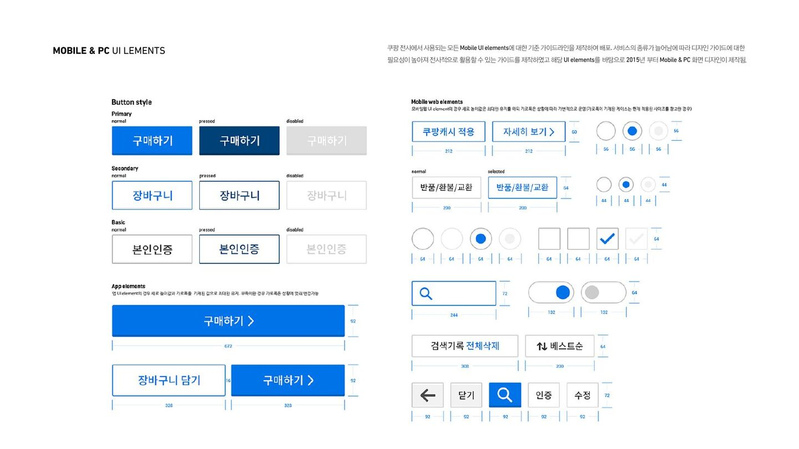
COUPANG · 2013-2016
여행·레저 상품이 늘어나는 환경에서 빠른 탐색과 사용자 목적별 검색 옵션을 목표로 전체 UX를 개선했습니다.
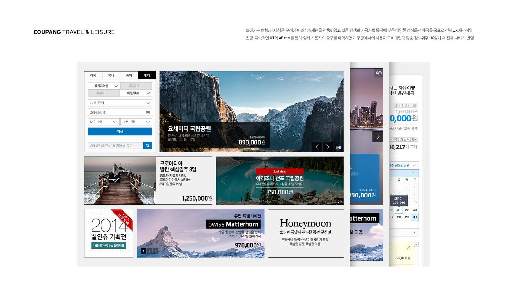
COUPANG · 2013-2016
정기배송 서비스의 정책, 기획, UI 설계, 홍보 경험까지 참여해 반복 구매 맥락에서 일관된 경험을 설계했습니다.
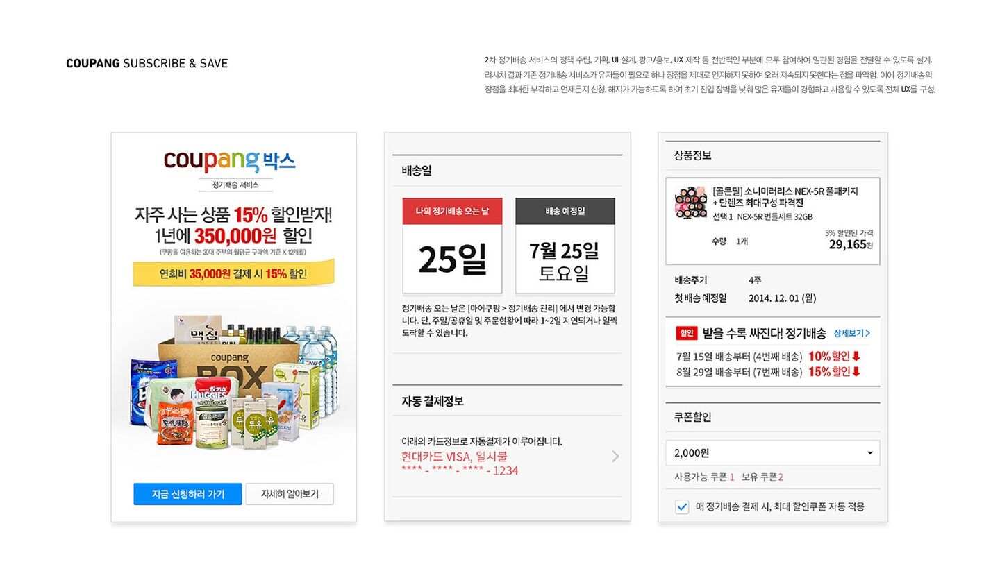
COUPANG · 2013-2016
마켓 에셋과 로딩 등 서비스 사용 전 사용자가 처음 마주하는 화면의 GUI를 설계했습니다.
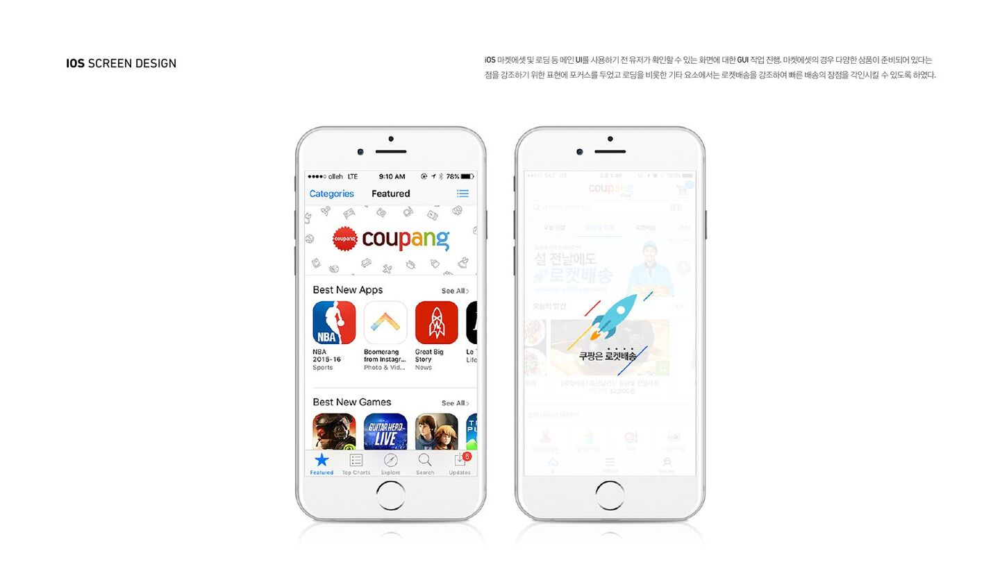
VINYL · 2009-2013
2014년형 LG SMART TV 시안 프로토타입을 디자인 PM으로 제작했습니다. XYZ 축을 활용해 공간감 있는 TV 경험을 설계했습니다.
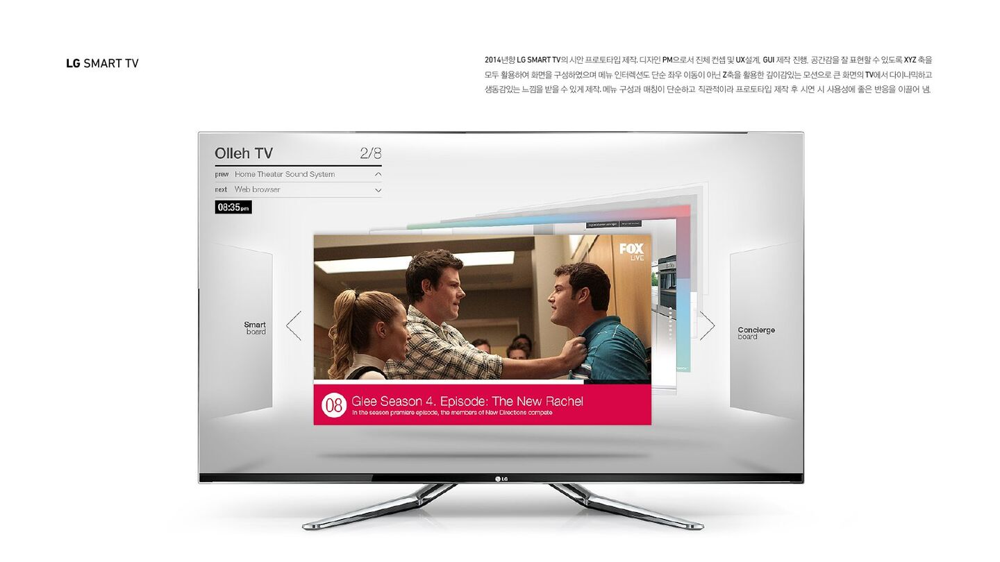
VINYL · 2009-2013
SKT 오프라인 매장에서 느낄 수 있는 세련되고 단순한 인상을 모바일 앱에서도 이어갈 수 있도록 디스플레이 오브젝트를 설계했습니다.
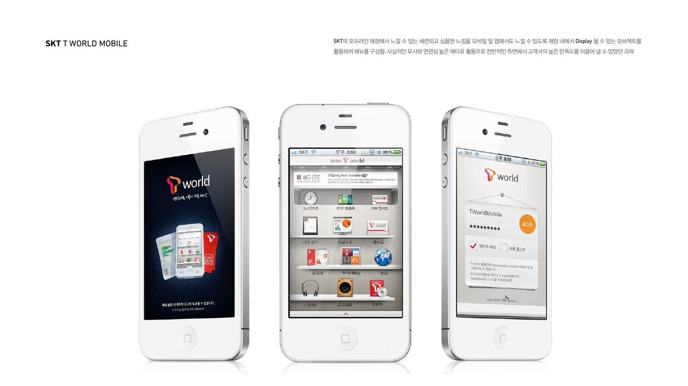
VINYL · 2009-2013
CEO를 위한 모바일 ERP 시스템입니다. Shadow tracking과 고객 인터뷰로 업무 환경과 생활 패턴을 파악해 화면 구조를 설계했습니다.
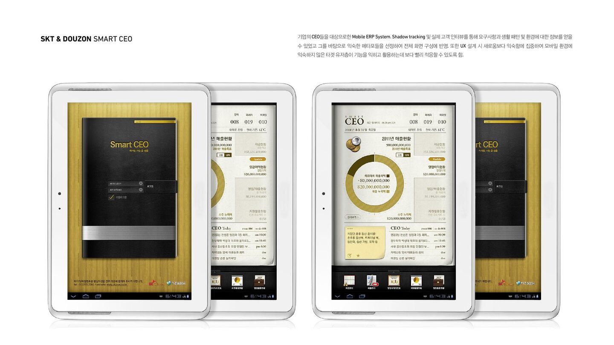
VINYL · 2009-2013
국민은행 모바일 앱의 메인 아이콘을 디자인했습니다. 실제 금융 상품의 메타포를 사각형 프레임으로 통일했습니다.
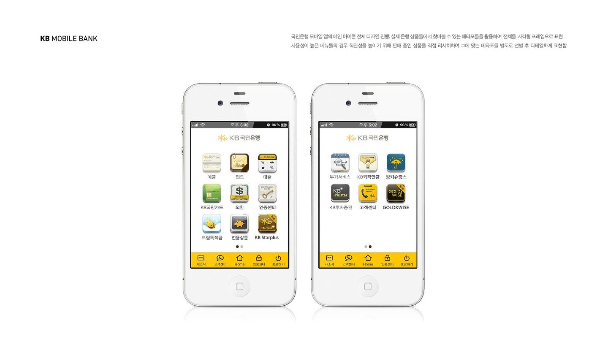
VINYL · 2009-2013
MP4 플레이어의 메인 메뉴와 서브 화면 전체 GUI를 제작했습니다. 사선 모티브를 타이포와 아이콘의 시각 언어로 확장했습니다.
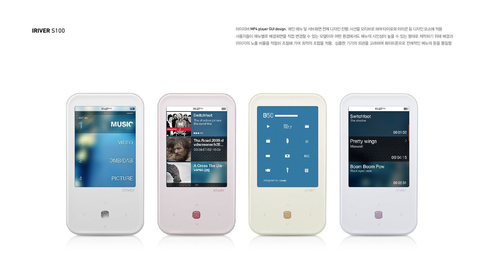
VINYL · 2009-2013
유아를 위한 모바일 듣기·말하기 서비스입니다. 오프라인 교재의 학습 경험을 모바일 상호작용으로 옮겼습니다.
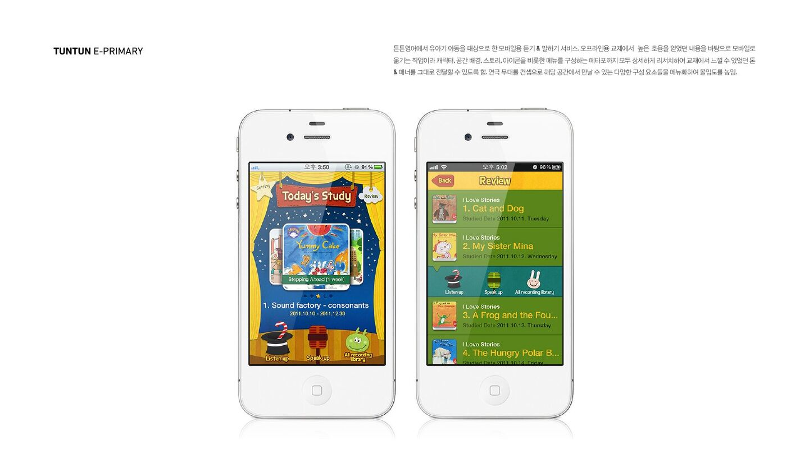
VINYL · 2009-2013
태블릿용 모바일 오피스 UX를 설계했습니다. 실제 업무 환경과 자주 쓰는 기능을 관찰해 사용 흐름을 구성했습니다.
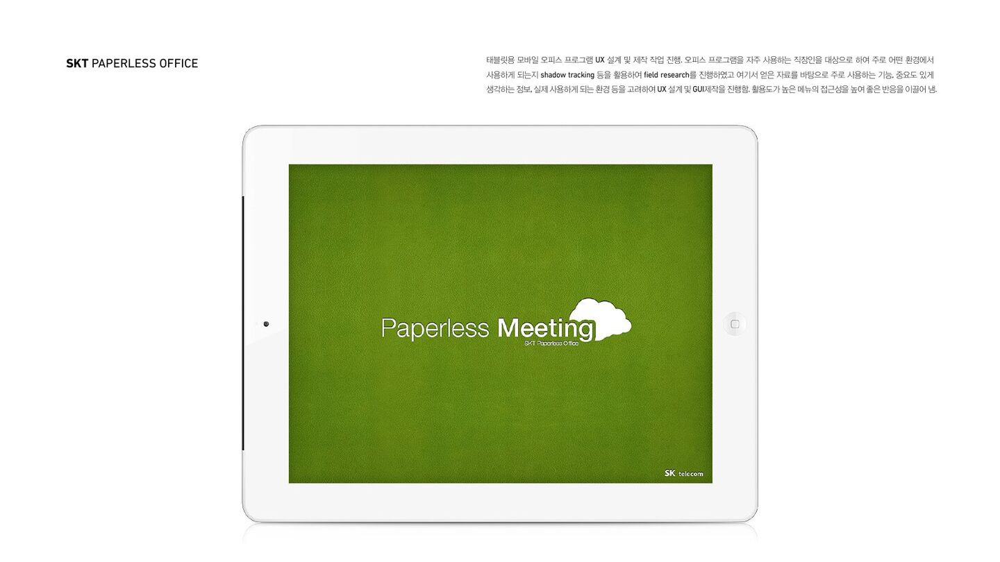
VINYL · 2009-2013
2013년형 Gesture TV 프로토타입입니다. 양산 이전의 가능성을 탐색하며 과감한 UI·GUI 실험을 진행했습니다.
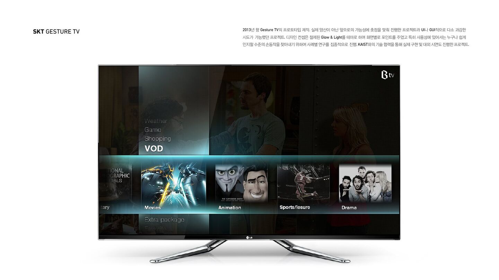
VINYL · 2009-2013
N스크린 환경을 지원하는 호핀의 태블릿 프로토타입 UX를 설계했습니다. 다양한 디바이스에서 확장 가능한 모듈형 디자인을 적용했습니다.
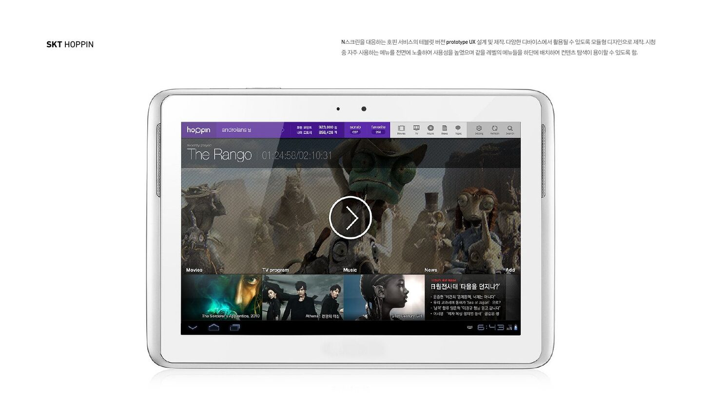
VINYL · 2009-2013
카트에 내장돼 할인 정보·매장 안내·쿠폰을 제공하는 스마트 카트입니다. 사용자 인터뷰와 Shadow tracking으로 매장 동선을 이해했습니다.
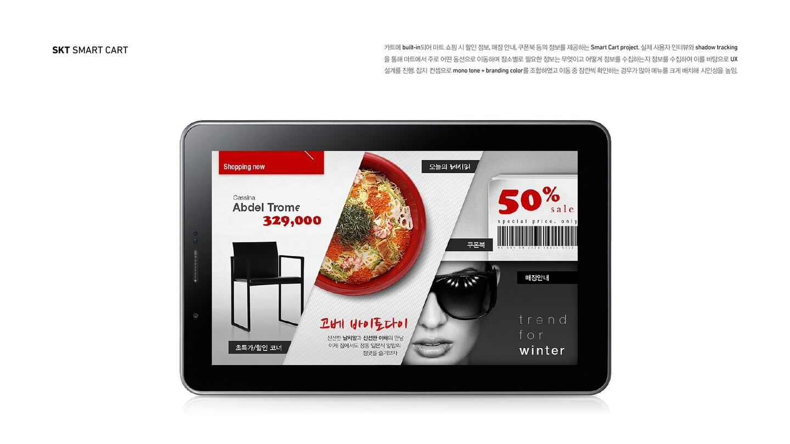
VINYL · 2009-2013
미주향 단말기 Bumblebee의 메인·서브·대기 화면을 디자인했습니다. 편안한 톤앤매너를 아이콘과 화면 전반에 적용했습니다.
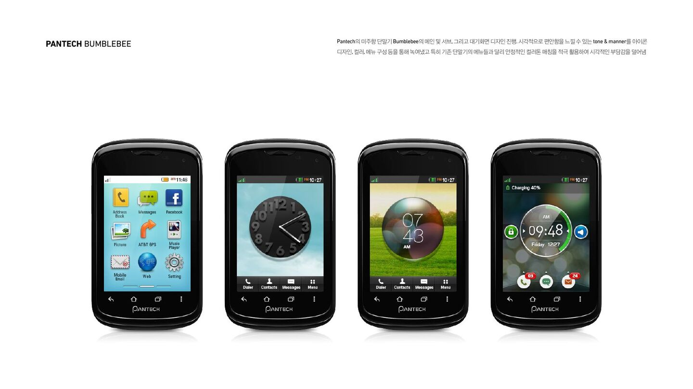